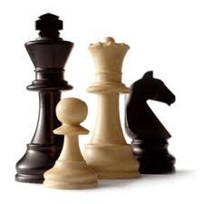

CHESS

Chess is a two-player strategy board game played on a chessboard, a checkered gameboard with 64
squares arranged in an 8×8 grid.[1] The game is played by millions of people worldwide.
Each player begins with 16 pieces: one king, one queen, two rooks, two knights, two bishops, and
eight pawns. Each of the six piece types moves differently, with the most powerful being the queen
and the least powerful the pawn. The objective is to checkmate[note 1] the opponent's king by
placing it under an inescapable threat of capture. To this end, a player's pieces are used to attack
and capture the opponent's pieces, while supporting each other. In addition to checkmate, the
game can be won by voluntary resignation of the opponent, which typically occurs when too much
material is lost, or checkmate appears unavoidable. A game can also in several ways end in a draw.
Chess is believed to have originated in India sometime before the 7th century, being derived from
the Indian game chaturanga, which is also the likely ancestor of the Eastern strategy games
xiangqi, janggi, and shogi. (A minority view holds that chess originated in China.) The pieces
assumed their current powers in Spain in the late 15th century; the rules were finally standardized
in the 19th century. The first generally recognized World Chess Champion, Wilhelm Steinitz,
claimed his title in 1886. Since 1948, the World Championship has been regulated by FIDE,
the game's international governing body. FIDE also organizes the Women's World Championship,
the World Junior Championship, the World Senior Championship, the Blitz and Rapid World
Championships, and the Chess Olympiad, a popular competition among international teams.
There is also a Correspondence Chess World Championship and a World Computer Chess
Championship. Online chess has opened amateur and professional competition to a wide and varied
group of players.
FIDE awards titles to skilled players, the highest of which is grandmaster. Many national chess
organizations also have a title system; however, these are not recognized by FIDE.
Until recently, chess was a recognized sport of the International Olympic Committee;[2] some
national sporting bodies such as the Spanish Consejo Superior de Deportes also recognize chess as
a sport.[3] Chess was included in the 2006 and 2010 Asian Games.
Since the second half of the 20th century, computers have been programmed to play chess with
increasing success, to the point where the strongest home computers play at a higher level than
the best human players. Since the 1990s, computer analysis has contributed significantly to chess
theory, particularly in the endgame. The IBM computer Deep Blue was the first machine to
overcome a reigning World Chess Champion in a match when it defeated Garry Kasparov in 1997.
The rise of strong computer programs (called "engines") runnable on hand-held devices has led to
increasing concerns about cheating during tournaments.
There are also many chess variants which utilize different rules, pieces, or boards. One of these,
Chess960 (originally "Fischerandom"), has gained widespread popularity as well as limited FIDE
recognition.